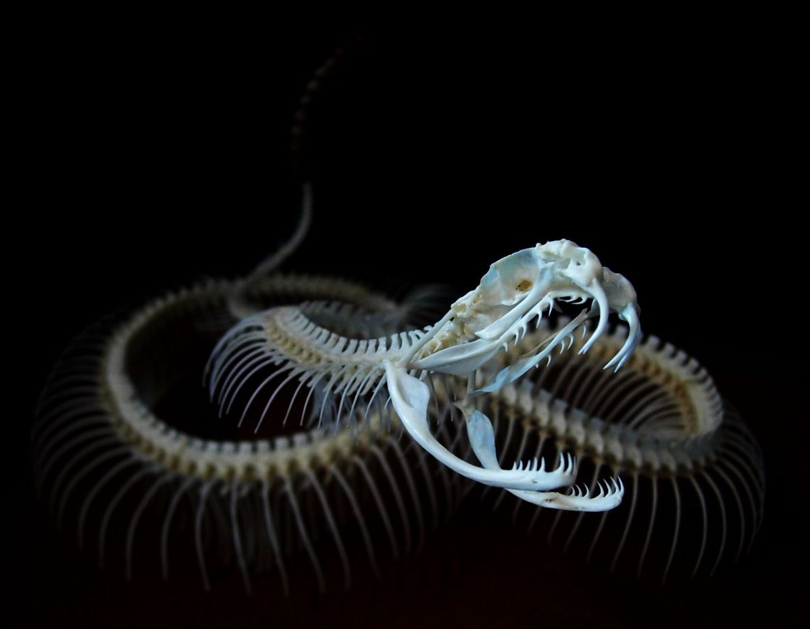
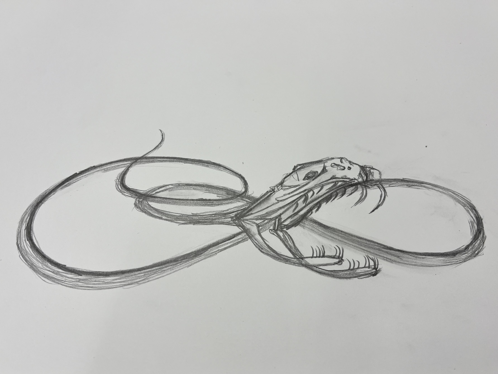
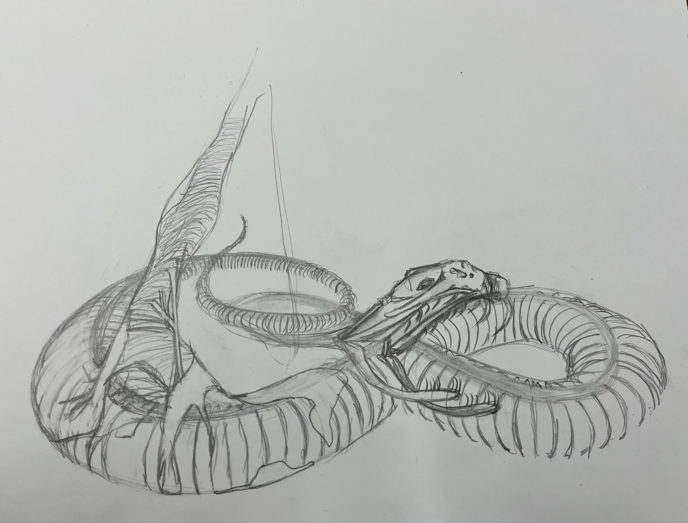
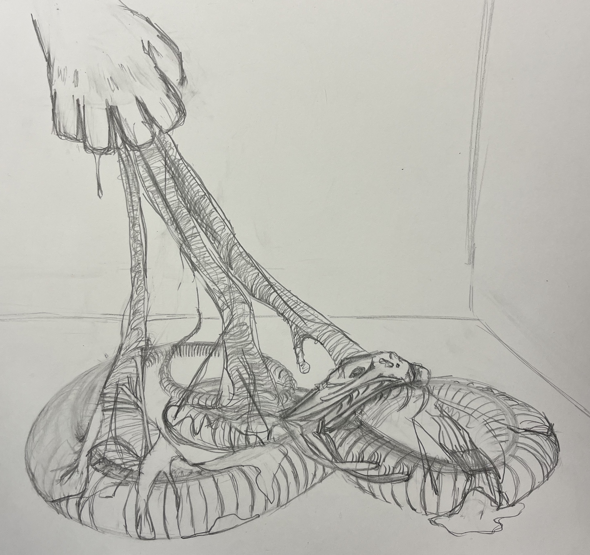
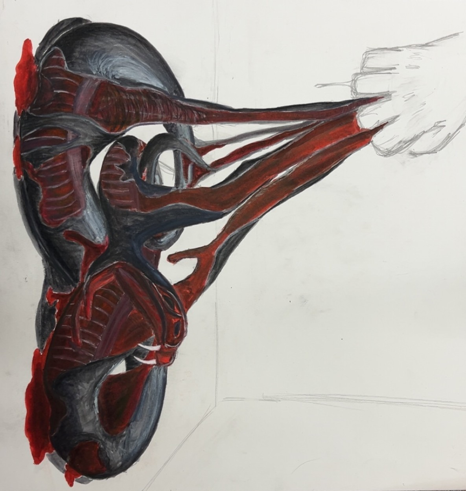
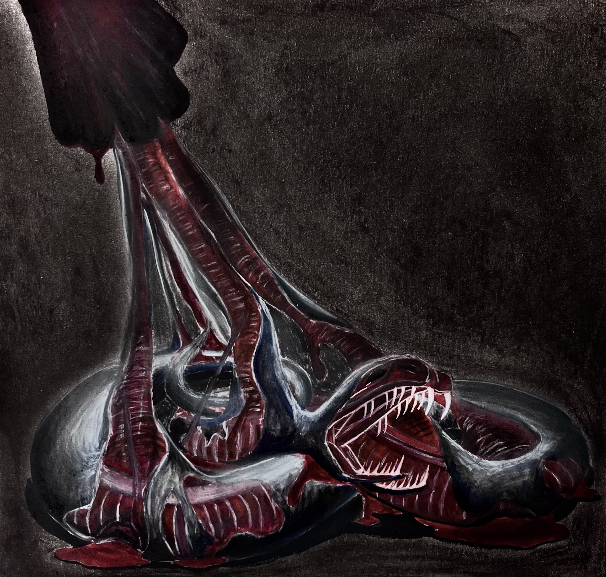

Shedding
This piece depicts the forceful tearing of its skin with flesh and bones. Shedding allows the snake to grow and transform; it must shed its old skin to continue protecting itself. Yet, when this process is forced, then the protection that comes from the new skin is stripped away. More layers are torn that cannot be healed. The bare snake is exposed to dangers without its skin, flesh, or bones.





